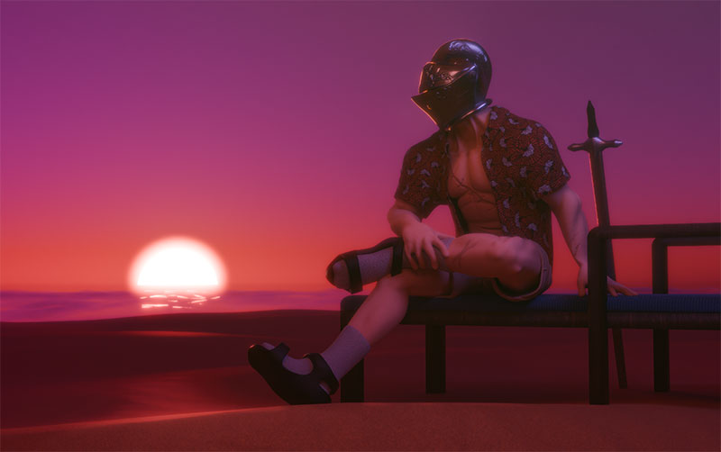
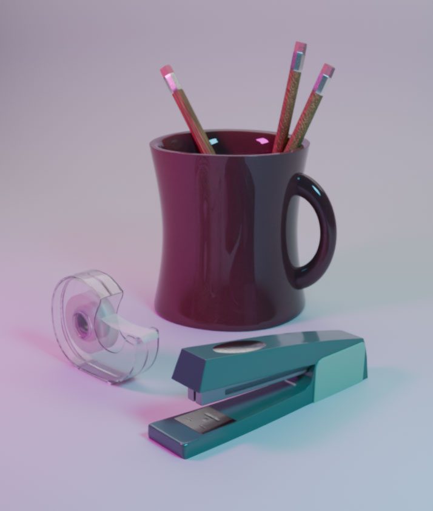
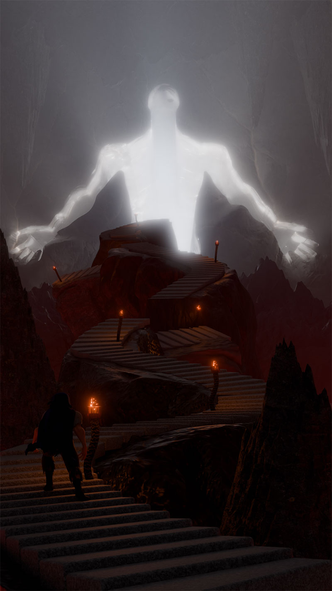
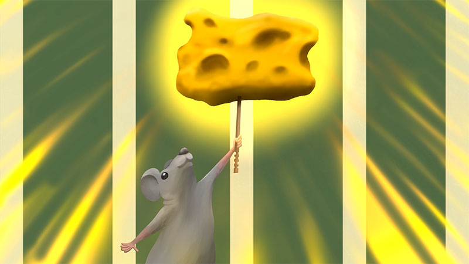

「 」 About Me
Hi, I’m Ethan! I’m a Digital Media Artist currently enrolled at San Jose State. I like working in 3D modeling/sculpting and digital illustration. I mainly focus on designing unique characters and environments influenced by my own self-reflection. By combining this with my own interests and inspirations, I create art pieces like glimpses into another world. And through my art, I hope to connect with other people and give them an idea of who I am.
My Work


Retired Knight
This is a final character/scene render that I made in Blender. I designed a retired knight enjoying his day off on the beach. My original idea for the character was to make a medieval knight living in modern times. I wanted to juxtapose him in contemporary society to create a comedic scenario. But my idea evolved into the render you see below. The idea of a knight on a beach in a Hawaiian shirt and cargo shorts was the perfect vibe I was aiming for.


Rendered objects
This artwork was made in Blender with the goal of recreating simple, mundane objects. The goal of this project was to improve modeling and lighting abilities in Blender. It’s meant to simulate a photoshoot of objects under realistic lighting by using a cyclorama-shaped wall.


Expectations
This is a 3D rendered piece I made in Blender. The concept behind it was my perception of fulfilling my own expectations. In this scene, I portray fulfilling expectations of a crumbling staircase that represents the arduous path that I need to climb to reach my goal. The glowing figure at the end of the staircase represents the unrealistic expectations that I tend to set for myself.


Victory
Victory is a digital illustration that I created for a small collaborative game project. It was used as a background when you complete a level and progress to the next level. The game was based around a mouse running through different environments to get cheese at the end of each level.
Contact Information
Email: ethan.kamigaki@gmail.com